Niezbędne przyrządy i substanecje serowego amatora:
-
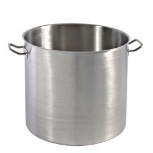
Garnek
A raczej garnki. Zawsze lepiej mieć większy niż mniejszy. 5 litrów to minimum. Zawsze lepiej mieć jeden więcej niż go nie mieć. Jak trzeba przelać, odcedzić, dodatkowy garnek może okazać się zbawienny. Garnek powinien być też wykonany z dobrego tworzywa (...), ale o tym poczytajcie nie u mnie.
-
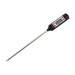
Termometr
Niestety bez tego ani rusz. Może być analogowy, najtańszy. Do tego polecam jakieś mocowanie do garnka, ja korzystam ze spinacza do papieru. Nie ważna metoda. Po prostu lepiej żeby jakoś się trzymał niż stać z termometrem w ręku.
-
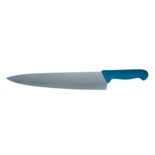
Nóż (i rózga kuchenna)
Nóż powinien być długi, na wysokość garnka w którym będzie mleko. Rózga jest opcjonalna, ale może się przydawać
-
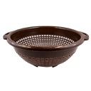
Sitko/durszlak
Może być takie do sera korycińskiego. Lepszy z większą ilością dziurek niż zabudowany.
-
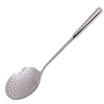
Łyżka cedzakowa, czerpak
Długa gługi. Duży. Do mieszania i podbierania serwatki.
-
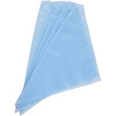
Tetra/ gaza/ chusta serowarska
Wszystko się może przydać. Najbiedniej wystarczy pielucha tetrowa. Lepiej chusta niż trójkąt. Możliwość rozłożenia dużo daje.
-
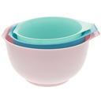
Jakieś miski, pojemniki
Zawsze mogą się przydać, jeżeli solimy w solance, możemy to zrobić w misce.
-
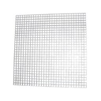
Kratka, podkładka pod ser
Można kupić w sklepie serowarskim, plastikową łatwą do mycia. Ja nie kupiłam, ale miałam matę bambusową z zestawu do robiena sushi. Na początek wystarczy.
-
Podpuszczka
Podstawa do serów podpuszczkowych. Są tanie, weźmy w płynie, z kroplomierzem. Na rynku są też bardziej wydajne, możemy na taką postawić. Wystarczy nam na wiele serów.
-
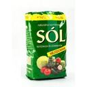
Sól
Sól kuchenna, niejodowana.
-
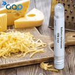
Kultury bakteryjne do serów
Jeżeli robimy z mleka pasteryzowanego są niezbędne. Jeżeli ze świeżego, możemy spróbować bez.
-
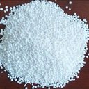
Chlorek wapnia
Niezbędny przy serze pasteryzowanym.
-
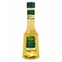
Ocet winny/ cytryna
Łatwo wejść w posiadanie, a później może dać nam większą satysfakcję z serowarstwa ( ricotta.)